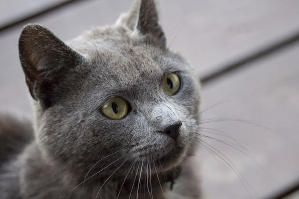

Considerado una mascota popular y un animal común en el ámbito urbano,
el gato doméstico entraña un cúmulo de datos sorprendentes e interesantes.
Este es el texto de mi primer mensaje

Esta es la imagen del primer mensaje
Curiosidades
En el Antiguo Egipto los gatos eran adorados y
el rapto o la venta de estos animales podía ser penado con la muerte,
pues su labor como cazadores de ratas era muy valorado.
Los gatos duermen una media de 16 horas.
La palabra egipcia para gato es "mau".